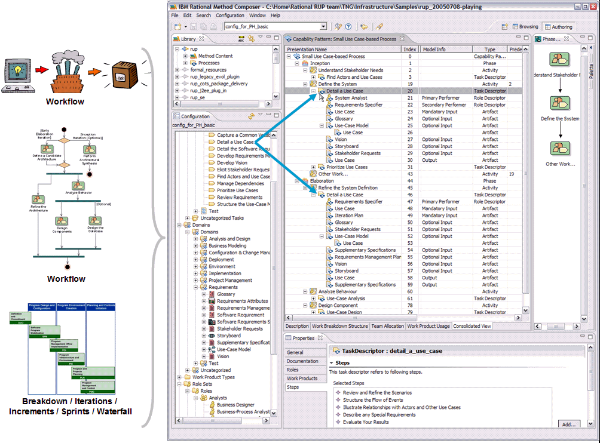

A development process defines sequences of tasks performed by roles and work products produced over time.

The figure above shows that processes are typically expressed as workflows or breakdown structures. Defining a strict sequence as in a waterfall model is as much a process as defining semi-ordered sequences in iterations of parallel work. They just represent different development approaches. Hence, for defining a process, one can take method content and combine it into structures that specify how the work shall be organized over time, to meet the needs of a particular type of development project (such as software for a online system versus software and hardware for an embedded system). RMC supports processes based on different development approaches across many different lifecycle models, including waterfall, incremental, and iterative lifecycles. RMC also supports different presentations for process, such as work-breakdown structure or workflow presentations. You can also define processes in RMC that use a minimal set of method content to define processes for agile, self-organizing teams.
The RMC screen capture above shows an example of a process presented as a breakdown structure of nested activities as well as a workflow or activity diagram for one particular activity, the inception phase. It also indicates with the two blue arrows that the particular method content task "Detail a Use Case" has been applied in the process twice; firstly in the inception phase under the activity "Define the System," and secondly, in the elaboration phase in the activity "Refine the system definition". You see below each of these task applications, referred to as a task descriptors in RMC, lists of the performing roles as well as the input and output work products. If you look closely, you see that these lists are different for each of these two task descriptors, expressing differences in performing the "Detail a Use Case" method throughout the lifecycle. You see different roles involved and changes in the list of inputs to be considered and outputs to be produced or updated. These changes were defined by the author that created this process to express the exact focus of the task performance for each occurrence. In addition to updating the roles, input and output work products for a task descriptor, you can also provide additional textual descriptions as well as define the exact steps of the task that should and should not be performed for this particular occurrence of the task.
RMC provides you with a process editor that supports different breakdown structure views as well as graphical process presentations. As a process author, you typically start by creating an activity breakdown, dividing and breaking your process down into phases, iterations, and high-level activities. Instead of creating your activities in the breakdown structure editor, you can alternatively work in a graphical activity diagram editor that allows you to graphically create a workflow for your activities. To assign method content to your process, you then have the choice of working in different process views (work breakdown structure, work product usage, or team allocation view). Each view supports a different approach for creating a process. You can define the work to be done, define the results to be produced, or define responsibilities for your roles. If requested, the editor updates the other process views semi-automatically using wizards that prompt you for decisions on selecting method content elements.
For more details on process authoring see the online help: